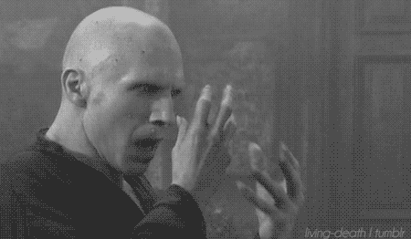

The bad one
 Lord Voldemort (born Tom Marvolo Riddle) first appeared in Harry Potter and the Philosopher's Stone, which was released in 1997. Voldemort appeared either in person or in flashbacks in each book and film adaptation in the series, except the third, Harry Potter and the Prisoner of Azkaban, where he is mentioned. In the series, Voldemort is the archenemy of Harry Potter, who according to a prophecy has "the power to vanquish the Dark Lord". Almost no witch or wizard dares to speak his name, instead referring to him by epithets such as "You-Know-Who", "He-Who-Must-Not-Be-Named" or "the Dark Lord".
Voldemort's obsession with blood purity signifies his aim to rid the wizarding world of Muggle (non-magical) heritage and to conquer both worlds, Muggle and wizarding, to achieve pure-blood dominance. Through his mother's family, he is the last descendant of wizard Salazar Slytherin, one of the four founders of Hogwarts School of Witchcraft and Wizardry. He is the leader of the Death Eaters, a group of evil wizards and witches dedicated to ridding the Wizarding World of Muggles and establishing Voldemort as its supreme ruler.
According to an interview with Rowling, "Voldemort" is pronounced with a silent 't' at the end, as in the French word "mort", meaning "death". This was the pronunciation used by Jim Dale in the first four U.S. audiobooks; however, after the release of the film version of Harry Potter and the Philosopher's Stone, in which the characters who dared refer to him by name pronounced it with the "t", Dale altered his pronunciation to that in the films.
-
Bellatrix Lestrange
Bellatrix Lestrange is the first female Death Eater introduced in the books, and the most faithful member of Voldemort's inner circle.She is described as being highly attractive yet emaciated due to her time in Azkaban which had hollowed her face and described as having thick, shining black hair and dark heavily lidded eyes. Bellatrix is portrayed as paranoid, mentally unstable, and fanatically devoted to Voldemort. She takes an obvious pleasure in acts of torture and cruelty, as demonstrated when she killed her cousin, Sirius Black. Despite her apparent mental instability, she is a witch of prodigious ability, as demonstrated by all her victories in duels against other characters, and as noted by Harry in the final book.
Bellatrix was born Bellatrix Black to Cygnus Black and Druella Rosier in the year 1951 and has two sisters, Andromeda and Narcissa. She is also a first cousin to Sirius and Regulus Black, and an aunt to Draco Malfoy and Nymphadora Tonks. Bellatrix married Rodolphus Lestrange after leaving Hogwarts because it was "expected of her to marry a pure-blood". However, Rowling stated in an interview that Bellatrix's true love was Voldemort.
In Harry Potter and the Goblet of Fire, Rowling uses Dumbledore's Pensieve as a plot device to reveal that Bellatrix, rather than deserting Voldemort after his downfall like many other Death Eaters, is part of the group of dark wizards – along with Barty Crouch Jr, Rodolphus and Rabastan Lestrange – that tortured well-known Aurors Frank and Alice Longbottom in an attempt to gain information about Voldemort's location.For using the Unforgivable Cruciatus Curse to torture the Longbottoms to insanity, Bellatrix and her three associates were sentenced to life imprisonment in Azkaban. During the trial, she said Voldemort would rise again and reward them. When Voldemort is raised, he says the Lestranges went to Azkaban rather than renounce him and that they will be deeply rewarded when Azkaban is broken open.